StartupBench: Benchmarking General-Purpose Agents on Market-Validated End-to-End Workflows
StartupBench：市场化验证的端到端工作流基准
从 20+ 家已市场化 AI 创业公司抽象 97 个端到端交付任务；顶尖模型完整达标率仅约 30%。
翻译范围：正文全部段落走三步精翻（直译→反思→雅化）；脚注与参考文献不译；公式、数字、模型名、数据集名、引用标记按原文 Unicode 保真；表格还原为可复制文本。
Table 1
| Benchmark | Task Source | Output Final | E2E | Item-wise Eval. | Process Logic | Open- ended | Evaluation Method |
|---|---|---|---|---|---|---|---|
| GAIA [12] | Manual | Text | △ | ✗ | ✗ | ✗ | Rule |
Table 2
| Category | Count | Percentage (%) | |
|---|---|---|---|
| Overall | statistics | ||
| Total | tasks | 97 | 100.0 |
| Top-level | domains | 6 | – |
| Domain | distribution | ||
| Medical | & HealthCare | 21 | 21.6 |
| Finance | 18 | 18.6 | |
| Legal | 16 | 16.5 | |
| Business | & Management | 19 | 19.6 |
| STEM | & Computer Science | 16 | 16.5 |
| Education & Humanities | 7 | 7.2 | |
| Output | formats: DOCX XLSX | PPTX PDF | Markdown images and |
Table 3
| Model | Overall | Med | Finance | Legal | Business | STEM | Education |
|---|---|---|---|---|---|---|---|
| Average | score | ||||||
| Kimi-K3 | 73.67 | 80.03 | 62.38 | 69.45 | 83.90 | 68.34 | 77.71 |
| GPT-5.6-sol | 73.61 | 79.32 | 61.66 | 73.53 | 77.61 | 74.77 | 73.94 |
| GPT-5.5 | 72.79 | 78.59 | 62.09 | 71.75 | 79.59 | 72.14 | 68.32 |
| Seed-2.1-Pro | 67.19 | 73.15 | 57.26 | 61.35 | 77.83 | 65.61 | 62.91 |
| Kimi-K2.6 | 59.95 | 67.70 | 51.17 | 54.62 | 71.91 | 51.38 | 58.60 |
| GLM-5.1 | 60.79 | 65.66 | 51.22 | 50.20 | 78.53 | 52.18 | 66.50 |
| Qwen-3.6-Max | 59.46 | 66.51 | 52.45 | 50.33 | 75.03 | 48.83 | 59.26 |
| DeepSeek-V4-Pro | 61.11 | 69.42 | 51.11 | 54.53 | 73.69 | 54.89 | 57.03 |
| Gemini-3.1-Pro | 49.73 | 54.05 | 41.00 | 43.49 | 61.18 | 45.88 | 51.23 |
| Success rate | (≥90) | ||||||
| Kimi-K3 | 29.55 | 34.92 | 20.37 | 20.83 | 52.63 | 16.67 | 23.81 |
| GPT-5.6-sol | 31.27 | 33.33 | 27.78 | 22.92 | 38.60 | 33.33 | 28.57 |
| GPT-5.5 | 26.80 | 30.16 | 22.22 | 25.00 | 38.60 | 22.92 | 9.52 |
| Seed-2.1-Pro | 22.34 | 19.05 | 16.67 | 14.58 | 45.61 | 20.83 | 4.76 |
| Kimi-K2.6 | 13.06 | 15.87 | 14.81 | 6.25 | 24.56 | 4.17 | 4.76 |
| GLM-5.1 | 16.49 | 12.70 | 16.67 | 8.33 | 36.84 | 8.33 | 9.52 |
| Qwen-3.6-Max | 15.12 | 11.11 | 16.67 | 10.42 | 33.33 | 6.25 | 4.76 |
| DeepSeek-V4-Pro | 16.49 | 20.63 | 16.67 | 8.33 | 29.82 | 10.42 | 0.00 |
| Gemini-3.1-Pro | 6.53 | 6.35 | 11.11 | 6.25 | 8.77 | 0.00 | 4.76 |
Table 4
| Model | Auxiliary | Important | Core |
|---|---|---|---|
| Kimi-K3 | 77.89 | 75.12 | 73.40 |
| GPT-5.6-sol | 77.59 | 74.47 | 73.07 |
| GPT-5.5 | 75.12 | 75.09 | 72.07 |
| Seed-2.1-Pro | 70.83 | 69.85 | 65.77 |
| Kimi-K2.6 | 66.64 | 63.56 | 57.82 |
| GLM-5.1 | 64.58 | 61.40 | 60.68 |
| Qwen-3.6-Max | 65.39 | 62.17 | 58.08 |
| DeepSeek-V4-Pro | 66.50 | 62.97 | 60.05 |
| Gemini-3.1-Pro | 53.48 | 48.41 | 50.13 |
| Average | 68.67 | 65.89 | 63.45 |
Table 5
| Model | Compliance (%) |
|---|---|
| Kimi-K3 | 97.6 |
| Seed-2.1-Pro | 95.2 |
| GPT-5.6-sol | 94.6 |
| Qwen-3.6-Max | 94.6 |
| DeepSeek-V4-Pro | 94.0 |
| GPT-5.5 | 93.5 |
| Kimi-K2.6 | 92.9 |
| Gemini-3.1-Pro | 86.9 |
| GLM-5.1 | 86.3 |
Table 6
| Model | Hermes | Claude Code | Nanobot | Max--Min |
|---|---|---|---|---|
| GPT-5.5 | 71.00 | 70.11 | 72.79 | 2.68 |
| GLM-5.1 | 60.20 | 60.18 | 60.79 | 0.61 |
| Qwen-3.6-Max | 59.10 | 57.38 | 59.46 | 2.08 |
| Average | 63.43 | 62.56 | 64.35 | 1.79 |
Table 7表 7 汇总了通用与专用智能体系统的比较。在全部执行中，通用智能体取得 64.26 的平均分与 19.74% 的成功率，大幅低于专用智能体的 83.50 与 39.18%。鉴于专用智能体为其目标领域做了显式设计与优化，我们进一步为通用智能体设置一个更强的 oracle 条件：对每个模型–任务对，保留三次独立尝试中的最佳结果。该 oracle 选择将平均分提升至 71.75、成功率提升至 28.06%，但仍远不及专用智能体——平均分相差 11.75 分、成功率相差 11.12 个百分点。可见，这一性能差距无法简单归因于随机波动或偶发执行失败：即便允许通用智能体多次尝试并按最佳观测结果评估，专用智能体系统在这些任务上仍显著更有效。结合前文的失败模式分析，这些发现更完整地刻画了通用基础模型与专用创业智能体之间尚存的差距：今天的基础模型虽尚不能在统一通用框架下完全取代领域专用智能体，但其短板集中于相对清晰的一组能力——复杂指令遵循、领域知识、职业操作惯例与长程工作流执行。这表明专用系统的优势未必需要根本不同的智能体架构，而可能只是当前通用模型尚未可靠获得的能力。随着这些底层能力持续改进，通用智能体或许能在不依赖领域专用 harness 设计的情况下，越来越多地完成有价值的职业端到端任务。
| Agent System | Avg Score | Success Rate |
|---|---|---|
| General (All Runs avg) | 64.26 | 19.74 |
| General (Oracle) | 71.75 | 28.06 |
| Specialized Agent | 83.50 | 39.18 |
Table 8表 8 汇总了专家池的职业经验：中位数为 5 年。57 名专家中，68.4% 拥有至少 3 年职业经验，42.1% 至少 6 年，24.6% 至少 10 年。这些背景为把访谈得到的用户场景转化为可复现的基准任务，以及在交叉校验中评估任务的真实性、正确性与评估标准，提供了实践性领域知识。所有专家均依据任务构建与评审的实际工作量获得合理报酬。
| Expert Statistics | Value |
|---|---|
| Number of domain experts | 57 |
| Median professional experience | 5 years |
| Experts with ≥3 years of experience | 68.4% |
| Experts with ≥6 years of experience | 42.1% |
| Experts with ≥10 years of experience | 24.6% |
| StartupBench domain coverage | 6 / 6 |
Table 9表 9 汇总了 StartupBench 全部 2,453 条 rubric 的分布。Calculation Precision 是最大的 rubric 类别（38.9%），反映出产出客观正确工作成果的重要性。Structure & Completeness 与 Domain-Specific Compliance 合计占另外 42.8%，突出表明成功完成真实办公工作流不仅需要计算正确，还需要交付物完整与专业领域推理。
| Category | Percentage |
|---|---|
| Structure & Completeness | 27.31% |
| Calculation Precision | 38.89% |
| Information Integration | 9.46% |
| Domain-Specific Compliance | 15.49% |
| Engineering & Format | 6.20% |
| Output & Presentation | 2.65% |
| Total | 100.00% |
StartupBench: Benchmarking General-Purpose Agents
StartupBench：通用智能体基准评测
on Market-Validated End-to-End Workflows
面向市场化验证的端到端工作流
1ByteDance Seed, 2Nanjing University, 3M-A-P, 4TokenWave.AI
1字节跳动 Seed，2南京大学，3M-A-P，4TokenWave.AI
Full author list in Contributions
完整作者名单见“贡献”一节
arXiv:2608.17800v1 [cs.AI] 18 Aug 2026
arXiv:2608.17800v1 [cs.AI] 18 Aug 2026
Abstract摘要
Recent advances in Large Language Models(LLMs) and agents have substantially improved the ability of AI systems to execute complex tasks. Yet existing benchmarks largely rely on researcher- selected tasks, leaving uncertain whether such progress extends to the work that real-world users actually demand from AI systems. We introduce StartupBench, an E2E agent benchmark grounded in market-validated AI startup products. Rather than defining tasks from pre-defined assumptions about useful agent capabilities, we systematically study AI products with demonstrated adoption, together with their product workflows and users, to identify real-world tasks for which AI has established practical demand across diverse professional domains. We translate these workflows into complete deliverable-oriented tasks and evaluate them with fine-grained rubrics capturing their complex requirements. Across representative models evaluated under a unified agent harness, even the strongest model successfully completes only approximately 30% of StartupBench, despite making substantial partial progress on many tasks. Further analysis identifies aspects like complex instruction following and domain-specific expertise as major sources of failure. Our results reveal that many market-validated workflows remain beyond the reliable capabilities of current general- purpose agents, establishing StartupBench as an empirical measure of progress toward E2E completions of real-world user tasks.
大语言模型（LLM）与智能体的最新进展显著提升了 AI 系统执行复杂任务的能力。然而，现有基准大多依赖研究者自行挑选的任务，这些进展能否延伸到真实用户真正需要 AI 完成的工作，仍无定论。为此，我们提出 StartupBench——一个以获得市场验证的 AI 创业公司产品为根基的端到端（E2E）智能体基准。我们不从关于“智能体应具备何种能力”的预设出发定义任务，而是系统研究已被真实采用的 AI 产品及其工作流与用户，从中识别 AI 已形成实际需求、覆盖多个专业领域的真实任务；再将这些工作流转化为完整的、以交付物为导向的任务，并用覆盖其复杂需求的细粒度 rubric 加以评估。在统一的智能体 harness 下，即便最强的模型也仅完成 StartupBench 约 30% 的任务，尽管其在众多任务上已取得可观的部分进展。深入分析表明，复杂指令遵循与领域专业知识是失败的主要来源。我们的结果显示，许多经市场验证的工作流仍超出当前通用智能体的可靠能力，StartupBench 由此成为衡量真实用户任务端到端完成进展的实证标尺。
Project Page: https://startupbench.github.io/
项目主页：https://startupbench.github.io/
Date: August 19, 2026
日期：2026 年 8 月 19 日
1Introduction
Large language models (LLMs) are increasingly evolving from systems that primarily retrieve information or answer questions[5, 12, 26] into agents capable of completing complex real-world tasks. Current AI systems are expected to execute end-to-end (E2E) workflows, coordinate multiple capabilities, and produce deliverables that satisfy practical requirements under realistic constraints. As AI becomes increasingly integrated into professional work, autonomously completing user-delegated tasks has become an important measure of model capability. Evaluating whether AI systems can reliably translate their capabilities into professionally usable deliverables is therefore a central challenge for the next generation of benchmarks.
大语言模型（LLM）正从以检索信息、回答问题为主的系统[5, 12, 26]，演化为能够完成复杂现实任务的智能体：执行端到端（E2E）工作流、协调多种能力，并在现实约束下产出符合实际要求的交付物。随着 AI 深度融入专业工作，能否自主完成用户委托的任务，已成为衡量模型能力的重要标尺。因此，评估 AI 系统能否可靠地把能力转化为专业可用的交付物，是下一代基准的核心命题。
Recent benchmarks have made important progress toward evaluating E2E task execution under realistic settings. Nevertheless, several important limitations remain. First, many benchmark tasks are still largely defined from researchers’ perspectives rather than grounded in workflows that have demonstrated practical demand through real-world AI adoption [12, 18, 19], limiting their ability to reflect authentic user needs and deliverable requirements. Second, although several benchmarks evaluate complete deliverables [23, 24], their evaluation protocols are often substantially coarser than the deliverables themselves. Real-world work
近期的基准在真实场景下的端到端任务执行评估上取得了重要进展，但仍存在几方面局限。第一，许多任务仍主要从研究者视角出发定义，而非扎根于已被真实采用、证明了实际需求的工作流[12, 18, 19]，因而难以反映真实用户需求与交付物要求。第二，虽有基准评估完整交付物[23, 24]，其评估协议却往往远粗于交付物本身：现实工作
1
1
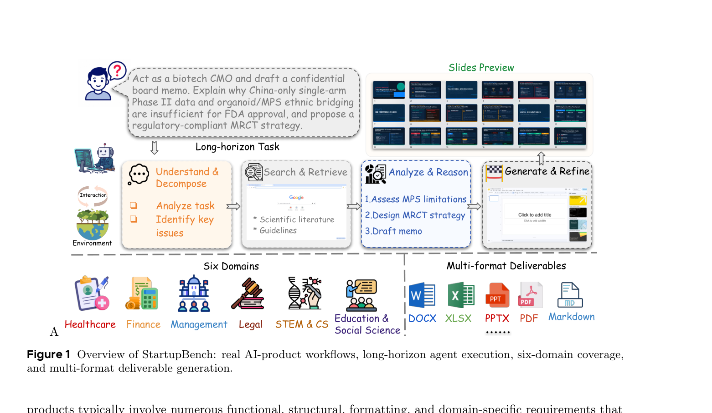
Figure 1 Overview of StartupBench: real AI-product workflows, long-horizon agent execution, six-domain coverage, and multi-format deliverable generation.
products typically involve numerous functional, structural, formatting, and domain-specific requirements that holistic evaluations cannot faithfully assess. Consequently, existing benchmarks still provide only limited evidence of how well current models and agents can satisfy complex real-world user requirements and reliably produce professionally usable deliverables.
产品通常涉及大量功能、结构、格式与领域特定要求，整体性评估无法忠实考察这些要求。因此，对于当前模型与智能体能否满足复杂的真实用户需求、可靠地产出专业可用的交付物，现有基准仍只能提供有限的证据。
To address these limitations, we observe that AI-native startups offer a natural source of real-world AI workflows: their products have been validated through real-world adoption and commercial demand, providing direct evidence that users value and seek to delegate these tasks to AI. We therefore introduce StartupBench, a survey- and interview-driven benchmark that draws on these workflows to capture realistic E2E user requirements across domains. StartupBench spans 97 tasks across 6 primary domains and is built around the following design principles:
针对上述局限，我们注意到 AI 原生（AI-native）创业公司正是真实 AI 工作流的天然来源：其产品经受住了真实采用与商业需求的检验，直接表明用户重视并愿意将这些任务委托给 AI。据此我们提出 StartupBench——一个由调研与访谈驱动的基准，从这些工作流中捕捉跨领域的真实端到端用户需求。StartupBench 覆盖 6 个主要领域的 97 项任务，并遵循以下设计原则：
• Adoption-grounded task sourcing. We systematically survey AI-native startups and their products, complemented by product demonstrations and user interviews, to identify workflows with demonstrated real-world demand. We then construct these workflows into benchmark tasks that preserve their core user objectives and practical requirements.
• 以真实采用为据的任务来源。我们系统调研 AI 原生创业公司及其产品，辅以产品演示与用户访谈，识别已被证明具有真实需求的工作流；再将这些工作流转化为基准任务，保留其核心用户目标与实际要求。
• E2E deliverables. Each task requires producing the complete deliverables that users ultimately expect in realistic workflows, rather than intermediate outputs or simplified demonstrations.
• 端到端交付物。每项任务都要求产出用户在真实工作流中最终期望的完整交付物，而非中间输出或简化演示。
• Fine-grained rubric-based evaluation. Each StartupBench task is evaluated using multiple independent rubrics covering distinct dimensions of the expected deliverable, including functionality, structure, formatting, and domain-specific quality, ensuring a comprehensive and faithful assessment of real-world task completion.
• 基于细粒度 rubric 的评估。每项 StartupBench 任务都由多条相互独立的 rubric 评估，覆盖预期交付物的不同维度——功能性、结构性、格式与领域特定质量，从而对真实任务完成情况做出全面而忠实的评估。
We evaluate representative models on StartupBench under unified agentic harness. Results show that even
我们在统一的智能体 harness 下评估代表性模型。结果显示，即便
the strongest model successfully completes only about 30% of benchmark tasks, indicating that current general-purpose systems remain far from reliably producing professionally usable deliverables. Performance varies substantially across domains, with Finance, STEM & Computer Science and Education & Humanities proving particularly challenging. Deeper analysis further attributes these failures primarily to limitations in complex instruction following and domain-specific expertise, highlighting promising directions for future foundation models and agent systems.
最强模型也仅成功完成约 30% 的基准任务，表明当前通用系统距离可靠产出专业可用的交付物仍很遥远。各领域表现差异显著，其中 Finance、STEM & Computer Science 与 Education & Humanities 尤为困难。更深入的分析进一步将这些失败主要归因于复杂指令遵循与领域专业知识的不足，为未来基础模型与智能体系统指明了有前景的方向。
To summarize, our contributions are as follows:
综上，我们的贡献如下：
2
2
• We propose a survey- and interview-driven methodology for constructing agent benchmarks from real AI adoption scenarios.
• 我们提出一种由调研与访谈驱动的方法论，从真实的 AI 采用场景构建智能体基准。
• We construct StartupBench, a benchmark built through AI-native startup research, enterprise-user interviews, user-oriented task abstraction, expert data construction, and multi-stage quality control.
• 我们构建了 StartupBench——一个经由 AI 原生创业公司调研、企业用户访谈、面向用户的任务抽象、专家数据构建与多阶段质量控制建成的基准。
• We present a comprehensive empirical study of current foundation models and general-purpose agents on startup-derived workflows, providing a practical evaluation signal for assessing whether AI agents are progressing from answering questions toward reliably completing real work.
• 我们对当前基础模型与通用智能体在创业公司衍生工作流上的表现进行了系统的实证研究，为评估 AI 智能体是否正从回答问题迈向可靠完成真实工作提供了实用的评估信号。
2Related Work
2.1Commercial AI agents and Vertical Workflows
Recent advances in foundation models have enabled AI agents to gradually acquire planning, tool-use, file- processing, and multi-step execution capabilities [21, 30], pushing AI systems from general conversational assistants toward workflow-oriented products. In practice, commercial AI products increasingly package these capabilities into vertical workflows such as document processing, data analysis, financial research, enterprise operations, and knowledge work. This trend suggests that real-world AI value is not determined only by isolated model capabilities, but also by whether these capabilities can be productized into useful work products. However, existing academic benchmarks rarely use commercial adoption itself as a source of task discovery. StartupBench addresses this gap by deriving tasks from market-validated AI-native startups and their deep users, moving task construction from researcher-defined settings toward demand-driven workflow construction.
基础模型的最新进展使 AI 智能体逐步具备规划、工具使用、文件处理与多步执行能力[21, 30]，推动 AI 系统从通用对话助手走向面向工作流的产品。在实践中，商业 AI 产品日益将这些能力封装进垂直工作流，如文档处理、数据分析、金融研究、企业运营与知识工作。这一趋势表明，真实世界的 AI 价值不仅取决于孤立的模型能力，还取决于这些能力能否被产品化为有用的工作成果。然而，现有学术基准很少将商业采用本身作为任务发现的来源。StartupBench 弥补了这一空白：它从经市场验证的 AI 原生创业公司及其深度用户中派生任务，把任务构建从研究者定义的设定转向需求驱动的工作流构建。
2.2End-to-end evaluation of AI agents
Agent benchmarks have evolved from capability evaluation toward end-to-end task completion. Early benchmarks mainly focus on tool use, multi-step reasoning, and general assistant abilities, as in AgentBench and GAIA [10, 12]. Later work extends evaluation to more realistic interactive environments, including web interaction and computer-use tasks [27, 34]. More recent benchmarks further move toward professional work and economically meaningful tasks, covering enterprise software, simulated workplaces, occupational tasks, and long-horizon workflows [4, 7, 11, 18, 28, 35]. These works reflect a clear transition from isolated capability tests to realistic task-completion evaluation. StartupBench follows this direction, but differs in its task source: rather than relying primarily on public environments, occupational taxonomies, or simulated workplaces, it derives tasks from AI-native startup products, ToB user needs, and expected business deliverables.
智能体基准已从能力评估演进至端到端任务完成。早期基准主要关注工具使用、多步推理与通用助手能力，如 AgentBench 与 GAIA [10, 12]。后续工作将评估扩展到更真实的交互环境，包括网页交互与计算机使用任务[27, 34]。更近期的基准进一步转向专业工作与具有经济意义的任务，覆盖企业软件、模拟职场、职业任务与长程工作流[4, 7, 11, 18, 28, 35]。这些工作清晰地反映出从孤立能力测试到真实任务完成评估的转变。StartupBench 延续这一方向，但任务来源不同：它并非主要依赖公开环境、职业分类体系或模拟职场，而是从 AI 原生创业产品、ToB 用户需求与预期业务交付物中派生任务。
2.3Agent-as-a-Judge for complex deliverable evaluation
As agent tasks shift from short answers to heterogeneous deliverables such as reports, spreadsheets, slides, code patches, and structured files, evaluation must move from capability-centric scoring to deliverable-centric assessment[31]. LLM-as-a-Judge has been widely used for open-ended response evaluation, with MT-Bench and Prometheus studying preference-based or rubric-conditioned judging [8, 33]. For agentic workflows, however, judging often requires evidence retrieval, file inspection, state verification, and constraint checking over final artifacts. Agent-as-a-Judge extends LLM judging by equipping evaluators with tools and environment interaction, while AJ-Bench further studies judge agents on information acquisition, state verification, and process verification [22, 36]. StartupBench adopts this deliverable-centric evaluation paradigm by combining expert rubrics with automated judge agents that inspect original artifacts and evidence views, evaluating whether agents can transform model capabilities into usable work products.
随着智能体任务从简短答案转向报告、电子表格、幻灯片、代码补丁与结构化文件等异构交付物，评估也必须从以能力为中心的打分转向以交付物为中心的评估[31]。LLM-as-a-Judge 已被广泛用于开放式回答评估，其中 MT-Bench 与 Prometheus 研究了基于偏好或以 rubric 为条件的评审[8, 33]。然而对智能体工作流而言，评审往往需要在最终产物上执行证据检索、文件检查、状态验证与约束核查。Agent-as-a-Judge 通过为评审者配备工具与环境交互能力扩展了 LLM 评审，AJ-Bench 则进一步研究评审智能体在信息获取、状态验证与过程验证上的表现[22, 36]。StartupBench 采用这一以交付物为中心的评估范式，将专家 rubric 与自动评审智能体相结合：评审智能体检查原始产物与证据视图，评估智能体能否将模型能力转化为可用的工作成果。
3StartupBench
StartupBench is designed to evaluate whether models and agents can complete realistic workflows that users already delegate to AI products. This objective requires data that reflects authentic user demand while supporting controlled evaluation. We therefore require each task to be realistic, answerable, evaluable, and discriminative: it should originate from actual AI product usage, provide sufficient information for a
StartupBench 旨在评估模型与智能体能否完成用户已经委托给 AI 产品的真实工作流。这一目标要求数据既反映真实用户需求，又支持受控评估。因此，我们要求每项任务都满足真实性、可答性、可评性与区分度：它应源自真实的 AI 产品使用，并
3
3
Table 1 Comparison of StartupBench with existing benchmarks. E2E denotes end-to-end workflow completion; Item-wise Eval. denotes criterion-level judging. ✓, ✗, and △indicate full, no, and partial support.
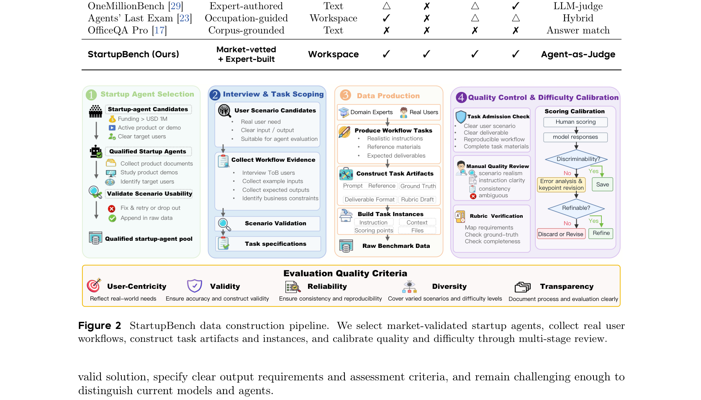
Figure 2 StartupBench data construction pipeline. We select market-validated startup agents, collect real user workflows, construct task artifacts and instances, and calibrate quality and difficulty through multi-stage review.
Neither manual task design nor direct extraction from product demonstrations is sufficient to obtain such data. The former is controllable but may be detached from real demand, while the latter is realistic but often lacks context, success criteria, or reproducible specifications. We therefore adopt a survey- and interview-driven multi-stage pipeline shown in Figure 2. We first survey market-validated AI-native startups, interview deep users to identify usage contexts, task goals, and expected deliverables, recruit domain experts to convert validated scenarios into benchmark instances, and finally apply quality control for realism, answerability, evaluability, and discriminative difficulty.
无论是人工设计任务，还是直接从产品演示中抽取，都不足以获得这样的数据：前者可控但可能脱离真实需求，后者真实却常常缺乏上下文、成功标准或可复现的规格。因此，我们采用图 2 所示的调研与访谈驱动的多阶段流水线：先调研经市场验证的 AI 原生创业公司，再访谈深度用户以明确使用场景、任务目标与预期交付物，随后招募领域专家将经过验证的场景转化为基准实例，最后实施质量控制，以保证真实性、可答性、可评性与有区分度的难度。
3.1Dataset Construction
3.1.1Startup Survey for Market-Validated Agent Scenarios
We first survey AI-native startups that build agent products across diverse domains. To identify workflows with market validation, we retain startups with more than USD 1M in funding and require evidence of real adoption, either through paid usage or substantial user traction. Funding provides a coarse signal of market expectation, while payment or user-scale evidence indicates that the product is used beyond exploratory
我们首先调研在多个领域构建智能体产品的 AI 原生创业公司。为识别经受过市场验证的工作流，我们保留融资超过 100 万美元（USD 1M）且具备真实采用证据（付费使用或可观用户规模）的公司。融资额是市场预期的粗粒度信号，而付费或用户规模证据则表明产品的使用已超出探索性
4
4
demonstrations. The output of this stage is a pool of candidate products and workflows for user interviews. During this stage we collect 20+ start-up agents as the basis for subsequent stage.
演示。该阶段的产出是一个候选产品与工作流池，供后续用户访谈使用。此阶段我们共收集 20 余家创业智能体产品，作为后续阶段的基础。
3.1.2User Interviews for Scenario and Requirement Discovery
For each candidate Startup-product, we interview deep users of the corresponding agent from different domains to recover practical usage beyond public product descriptions. The interviews elicit the usage context, user goal, input information, expected deliverable, success criteria, and common constraints. We summarize these findings into scenario specifications and representative demo cases, which serve as anchors for later annotation stage. During this stage we interview over 30 deep users and collected at least one demo case for each candidate Agent.
针对每个候选创业产品，我们访谈来自不同领域的相应智能体深度用户，以还原公开产品描述之外的真实使用方式。访谈提炼出使用场景、用户目标、输入信息、预期交付物、成功标准与常见约束。我们再将这些发现整理为场景规格与代表性演示案例，作为后续标注阶段的锚点。此阶段共访谈 30 余位深度用户，并为每个候选智能体收集至少一个演示案例。
3.1.3Expert Construction of Domain Tasks
Given the interview-derived workflow specifications and representative user scenarios as a reference or seed task, we recruit over 50 domain experts to reconstruct benchmark tasks that preserve the original workflow objectives, practical constraints, and expected deliverables while adapting them into reproducible evaluation instances. Rather than designing synthetic problems, experts standardize authentic user requests into benchmark tasks that faithfully represent real professional workflows.
以访谈得到的工作流规格与代表性用户场景为参照或种子任务，我们招募 50 余名领域专家重构基准任务：保留原始工作流的目标、实际约束与预期交付物，同时将其改造为可复现的评估实例。专家并非设计合成问题，而是把真实用户请求标准化为忠实反映真实职业工作流的基准任务。
Every task is required to satisfy three principles: it must originate from a realistic work request that users would naturally delegate to AI agents, involve an end-to-end workflow rather than an isolated subtask, and produce concrete professional deliverables with clearly defined success criteria and fine-grained evaluation rubrics for objective evaluation.
每项任务都必须满足三条原则：源自用户会自然委托给 AI 智能体的真实工作请求；涉及端到端工作流而非孤立子任务；产出具体的职业交付物，并配有明确定义的成功标准与细粒度评估 rubric，以便进行客观评估。
To standardize these tasks for evaluation, each task is represented as a triple
为将任务标准化以便评估，每项任务被表示为一个三元组
T = (q, E, R),
T = (q, E, R),
where q is a natural-language user request describing the task, E denotes the workspace containing all input files and resources required to complete the task, and R = {(pi, wi)}n
其中 q 是描述任务的自然语言用户请求，E 表示包含完成任务所需全部输入文件与资源的工作区，而 R = {(pi, wi)}n
i=1 is a set of weighted evaluation rubrics that assess complementary aspects of deliverable quality. Detailed task specifications and annotation guidelines are provided in Appendix A.1. During this stage, we collect over 150 candidate tasks for further quality control.
i=1 是一组带权重的评估 rubric，从互补方面评估交付物质量。详细的任务规格与标注指南见附录 A.1。此阶段共收集 150 余个候选任务，供后续质量控制使用。
3.1.4Quality Control
To ensure benchmark quality and consistency, every task undergoes the following multi-stage quality control process:
为确保基准的质量与一致性，每项任务都要经过以下多阶段质量控制流程：
Expert Cross Validation. Every task is independently reviewed by at least one additional domain expert. Reviewers verify four aspects of task quality: (1) the authenticity and correctness of the task description and workspace, (2) the fidelity of the reconstructed workflow, (3) the validity of the evaluation rubrics, and (4) the consistency between the reference deliverable and the finalized evaluation protocol. Detailed review criteria are provided in Appendix A.2.
专家交叉校验。每项任务由至少一名其他领域专家独立评审。评审者核实任务质量的四个方面：(1) 任务描述与工作区的真实性与正确性，(2) 重构工作流的保真度，(3) 评估 rubric 的有效性，(4) 参考交付物与最终评估协议之间的一致性。详细评审标准见附录 A.2。
Difficulty Control.We calibrate task difficulty through pilot executions using several frontier models under the same evaluation harness adopted in the benchmark1. Tasks that are consistently completed with high quality are excluded due to limited discriminative value. Pilot results also serve as an additional quality assurance stage: when failures are attributed to ambiguous instructions, incomplete workspace information, or inadequately specified evaluation criteria rather than intrinsic task difficulty, the corresponding task is revised and re-validated before inclusion.
难度控制。我们使用与基准相同的评估 harness1，以多个前沿模型试运行来校准任务难度。总能被高质量完成的任务因区分价值有限而被剔除。试运行结果还充当额外的质量保障环节：当失败可归因于指令含糊、工作区信息不完整或评估标准规定不充分，而非任务本身难度时，相应任务会被修订并重新验证后方可纳入。
5
5
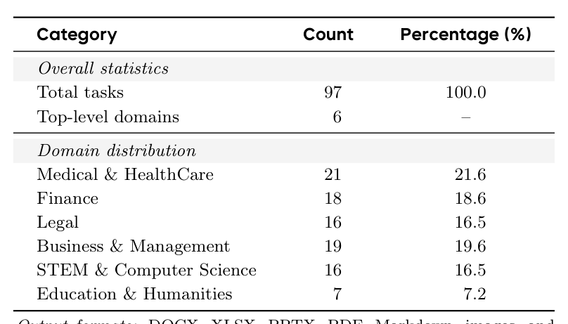
Table 2 Statistics of StartupBench. The benchmark contains 97 real-world workflow tasks across six top-level domains and requires diverse deliverable formats.
3.2Statistics for StartupBench
StartupBench contains 97 real-world workflow tasks across 6 top-level domains: Medical & HealthCare, Finance, Legal, Business & Management, STEM & Computer Science, and Education & Humanities. These tasks are designed to reflect deliverable-oriented workflows in realistic office settings, requiring agents to understand task contexts, follow complex constraints, process heterogeneous files, and produce usable work products. For evaluation, each task is evaluated using an average of 25.3 fine-grained rubrics, spanning 6 dimensions and 3 importance levels , enabling detailed assessment of complex, long-horizon workflows and diverse work deliverables. The summary of the domain coverage and main output formats of StartupBench is shown in Table 2.
StartupBench 包含 6 个顶级领域的 97 项真实世界工作流任务：Medical & HealthCare、Finance、Legal、Business & Management、STEM & Computer Science 与 Education & Humanities。这些任务旨在反映真实办公场景中以交付物为导向的工作流，要求智能体理解任务上下文、遵循复杂约束、处理异构文件并产出可用的工作成果。评估时，每项任务平均使用 25.3 条细粒度 rubric，覆盖 6 个维度与 3 个重要性层级，从而能够细致评估复杂的长程工作流与多样的工作交付物。StartupBench 的领域覆盖与主要输出格式汇总见表 2。
3.3Automatic Evaluation of StartupBench Tasks
As stated above, every task in StartupBench is defined as a triple T = (q, E, R). Given (q, E), the evaluated model produces a set of deliverables D. Before evaluation, we construct a lightweight evidence view V(D), consisting of extracted textual content and rendered page images, to facilitate navigation over heterogeneous artifacts while allowing the judge to access the original files whenever necessary.
如前所述，StartupBench 中每项任务都定义为三元组 T = (q, E, R)。给定 (q, E)，被评估模型产出一组交付物 D。评估之前，我们构建轻量级证据视图 V(D)，由抽取的文本内容与渲染的页面图像组成，以便在异构产物间导航，同时允许评审者在必要时访问原始文件。
Rather than relying on a single holistic judgment, StartupBench evaluates each rubric item independently through a dedicated AgentJudge session. Most tasks contain 20+ fine-grained rubric items covering diverse aspects of the expected deliverables, including functionality, completeness, formatting, and domain-specific requirements. Evaluating these criteria separately allows each rubric to receive dedicated reasoning and tool usage without interference from unrelated evaluation dimensions, while ensuring that every requirement is assessed explicitly. The final task score is then obtained by aggregating the outcomes of all rubric-level evaluations.
StartupBench 不依赖单一的整体性判断，而是通过专用的 AgentJudge 会话独立评估每条 rubric。大多数任务包含 20 余条细粒度 rubric，覆盖预期交付物的多个方面，包括功能性、完整性、格式与领域特定要求。逐项评估这些标准，可使每条 rubric 获得专门的推理与工具使用，不受无关评估维度干扰，同时确保每项要求都被显式评估。最终任务分数由所有 rubric 级评估结果聚合得到。
Following Agent-as-a-Judge, each rubric evaluation is carried out by a lightweight agent rather than a single forward pass. Let J denote the judging prompt and evaluation protocol used by the AgentJudge, given the task specification, deliverables, evidence view, and the target rubric item pi, the judge produces both a binary decision yi ∈{0, 1} indicating whether the rubric is satisfied and a textual justification ei:
遵循 Agent-as-a-Judge 范式，每条 rubric 的评估由一个轻量级智能体而非单次前向传播完成。设 J 为 AgentJudge 使用的评审提示与评估协议；给定任务规格、交付物、证据视图与目标 rubric 项 pi，评审者给出二元判定 yi ∈{0, 1}（表示该 rubric 是否满足）及文本理由 ei：
�
�
, (1)
, (1)
J, q, D, V(D), pi
J, q, D, V(D), pi
(yi, ei) = AgentJudge
(yi, ei) = AgentJudge
The final task score is computed by aggregating the weighted decisions across all rubric items:
最终任务分数通过对所有 rubric 项的加权判定聚合得到：
6
6
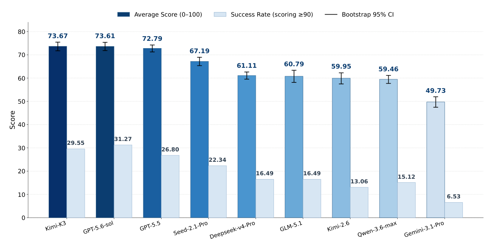
Figure 3 Leaderboard of StartupBench.
Pn
Pn
i=1 wiyi Pn
i=1 wiyi Pn
∈[0, 1]. (2)
∈[0, 1]. (2)
score(D, T ) =
score(D, T ) =
i=1 wi
i=1 wi
4Experiments
4.1Experimental Setup
We evaluate 9 representative models on StartupBench, spanning both closed- and open-source families:
我们在 StartupBench 上评估 9 个代表性模型，涵盖闭源与开源两大家族：
• Closed-source: GPT-5.6-sol [15], GPT-5.5 [16], Gemini-3.1-Pro [6], Seed-2.1-Pro [2],Qwen-3.6-Max [20]
• 闭源：GPT-5.6-sol [15]、GPT-5.5 [16]、Gemini-3.1-Pro [6]、Seed-2.1-Pro [2]、Qwen-3.6-Max [20]
• Open-source: DeepSeek-V4-Pro [3],Kimi-K3 [25], Kimi-K2.6 [13], GLM-5.1 [32].
• 开源：DeepSeek-V4-Pro [3]、Kimi-K3 [25]、Kimi-K2.6 [13]、GLM-5.1 [32]。
To improve the reliability of our results, we conduct 3 independent runs for each model and report 95% bootstrap confidence intervals for the task scores, computed using 10,000 resamples. All models are executed under the same Nanobot harness with an identical tool configuration, and every task is capped at a maximum of 200 interaction steps. For each task, the agent is initialized with the task-specific workspace and input query, and its deliverables are collected from the designated output directory. Following the evaluation protocol described in the previous section, the deliverables are evaluated by the judge agent against the task specification, workspace context, and rubric set.
为提高结果的可靠性，每个模型独立运行 3 次，并报告任务分数的 95% bootstrap 置信区间（由 10,000 次重采样计算）。所有模型均在相同的 Nanobot harness 与完全一致的工具配置下执行，每项任务最多 200 个交互步。对每项任务，智能体以任务专属的工作区与输入查询初始化，其交付物从指定输出目录收集。按照上一节的评估协议，交付物由评审智能体对照任务规格、工作区上下文与 rubric 集进行评估。
For automatic evaluation, the judge agent also runs under the same Nanobot harness to ensure a consistent execution environment, while using GPT-5.5 as the underlying judge model. Apart from the continuous task score, we also report success rate, the fraction of runs that are successfully completed, pooled over the three runs. A task is considered successful if its final score is at least 90; otherwise, it is counted as a failure.
在自动评估中，评审智能体同样运行于相同的 Nanobot harness，以保证执行环境一致，底层评审模型为 GPT-5.5。除连续任务分数外，我们还报告成功率，即三次运行合并后成功完成的比例。任务最终分数不低于 90 即视为成功，否则计为失败。
4.2Main Results
Startup tasks remain far from saturated under a general-purpose agent harness. Although the strongest models, Kimi-K3 and GPT-5.6-sol, achieve average scores of 73.67% and 73.61%, respectively, no model successfully completes even one third of the benchmark under the strict acceptance criterion (score ≥90). More broadly, the average scores of most models lie between roughly 55 and 75, indicating that current agents are generally capable of making substantial progress toward solving realistic professional workflows. However, high average scores do not necessarily translate into high task completion rates. This is particularly
在通用智能体 harness 下，创业任务远未饱和。尽管最强的 Kimi-K3 与 GPT-5.6-sol 分别取得 73.67% 与 73.61% 的平均分，但在严格验收标准（分数 ≥90）下，没有任何模型成功完成基准任务的三分之一。更广泛地看，多数模型的平均分介于约 55 至 75 之间，表明当前智能体总体上能够在求解真实职业工作流方面取得可观进展。然而，高平均分未必转化为高任务完成率。这一点在
7
7
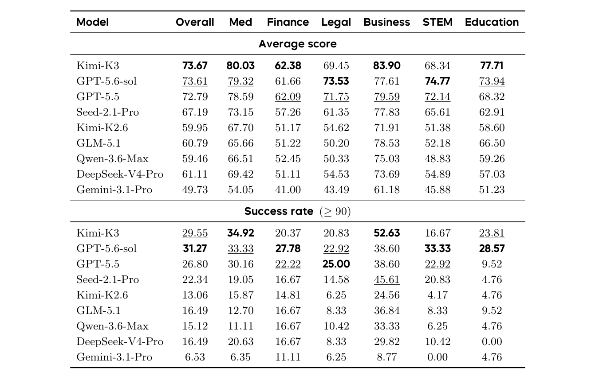
Table 3 Model performance of StartupBench, averaged over three independent runs. Top block: importance-weighted mean per-task score (0–100); bottom block: success rate, the fraction of samples scoring ≥90 (%), pooled over the three runs. Per-column best in bold, second-best underlined.
evident for the Kimi series: Kimi-K3 achieves the highest average score overall but a lower success rate than GPT-5.6-sol, while Kimi-K2.6 similarly attains a higher average score than Qwen-3.6-Max but a lower success rate. These discrepancies suggest that some models can satisfy a substantial fraction of task requirements while still falling short of complete delivery. More generally, all models exhibit substantially lower success rate than average score, suggesting that the primary bottleneck is no longer executing large portions of a workflow, but consistently producing artifacts that satisfy the standards required for direct professional use.
Kimi 系列上尤为明显：Kimi-K3 取得全场最高平均分，成功率却低于 GPT-5.6-sol；Kimi-K2.6 同样平均分高于 Qwen-3.6-Max，成功率却更低。这些差异表明，一些模型可以满足相当比例的任务要求，却仍达不到完整交付。更一般地，所有模型的成功率都明显低于平均分，说明主要瓶颈已不再是执行工作流的大部分内容，而是稳定地产出满足直接专业使用标准的产物。
This gap has two important implications. First, it helps explain why specialized vertical agents continue to provide practical value in many market-validated workflows, where consistently meeting professional standards remains essential. Second, it suggests that the next frontier for foundation models is not merely performing professional tasks, but reliably producing work products that users can adopt without further verification or revision. We further investigate the underlying causes of this gap in Section 4.4.2.
这一差距有两点重要含义。其一，它有助于解释为什么专用垂直智能体在许多经市场验证的工作流中持续提供实用价值——在这些场景中，稳定达到专业标准仍然不可或缺。其二，它提示基础模型的下一个前沿不仅是完成职业任务，而是可靠地产出用户无需进一步核查或修改即可采用的工作成果。我们将在 4.4.2 节进一步探究这一差距的深层原因。
Performance varies substantially across professional domains. Table 3 reveals that current general-purpose agents do not exhibit uniform competence across real-world workflows. Among the six domains, Business is consistently the easiest: every model achieves an average score above 60, and the average success rate across models is also substantially higher than in any other domain. In contrast, Finance is the most challenging, with the lowest average score of 54.48%. The large gap between Business and Finance suggests that current models handle structured, relatively standardized tasks more reliably than workflows requiring sustained quantitative reasoning, cross-document consistency, and multi-step verification.
各专业领域间的表现差异显著。表 3 显示，当前通用智能体在真实世界工作流上的能力并不均衡。六个领域中，Business 始终最容易：每个模型的平均分都超过 60，且模型间的平均成功率也大幅高于任何其他领域。相比之下，Finance 最具挑战，平均分最低，为 54.48%。Business 与 Finance 之间的巨大差距表明，当前模型处理结构化、相对标准化的任务，比处理需要持续定量推理、跨文档一致性与多步验证的工作流更可靠。
The results also reveal pronounced domain specialization. While Kimi-K3 and GPT-5.6-sol achieve nearly identical average scores overall (73.67 vs. 73.61), their strengths differ substantially across domains. Under success rate, Kimi-K3 performs best in Medical and Business, whereas GPT-5.6-sol leads in Finance, STEM, and Education; GPT-5.5 remains strongest in Legal. A similar pattern emerges in average score, where
结果还揭示了明显的领域专精化。虽然 Kimi-K3 与 GPT-5.6-sol 的总体平均分几乎相同（73.67 对 73.61），但二者的优势领域差别很大。在成功率上，Kimi-K3 在 Medical 与 Business 表现最佳，GPT-5.6-sol 则在 Finance、STEM 与 Education 领先；Legal 上 GPT-5.5 仍然最强。平均分上也呈现类似格局：
8
8
Kimi-K3 leads in Medical, Business, Finance and Education, GPT-5.6-sol in Legal and STEM. Thus, even among the strongest models, no single agent consistently dominates across professional domains. These results suggest that current general-purpose agents still exhibit substantial domain-dependent variation, leaving considerable room for improving the robustness and transferability of end-to-end task execution across heterogeneous professional workflows.
Kimi-K3 在 Medical、Business、Finance 与 Education 领先，GPT-5.6-sol 在 Legal 与 STEM 领先。可见，即便在最强模型之中，也没有哪个智能体能在所有专业领域持续占优。这些结果表明，当前通用智能体仍存在显著的领域依赖差异，在异构专业工作流上提升端到端任务执行的稳健性与可迁移性仍有很大空间。
4.3Effectiveness of Proposed Evaluation Framework
To validate the reliability of our evaluation framework, we compare its judgments against expert annotations. We sample outputs from two representative models for all tasks and ask domain experts to independently
为验证评估框架的可靠性，我们将其判定与专家标注进行对比。我们为所有任务抽取两个代表性模型的输出，并请领域专家独立
evaluate each submission using the predefined rubrics. At the rubric level, the automatic evaluator achieves an overall agreement of 92.78% with expert judgments. We further examine whether these local agreements translate into consistent task-level decisions by comparing the resulting success labels, where a submission is considered successful if its aggregated score reaches 90. The automatic and expert evaluations agree on 92.84% of these success decisions. Notably, the similarly high agreement at both rubric and success levels, despite their substantially different label distributions, suggests that the observed consistency is not merely an artifact of label imbalance.
依据预定义 rubric 评估每份提交。在 rubric 层面，自动评估者与专家判断的总体一致率为 92.78%。我们进一步考察这些局部一致性能否转化为一致的任务级判定：比较由此产生的成功标签（聚合分数达到 90 即视为成功），自动与专家评估在 92.84% 的成功判定上一致。此外，rubric 层面与成功层面虽然标签分布迥异，一致率却同样高，说明所观察到的一致性并非标签不均衡带来的假象。
We further investigate the necessity of evaluating each rubric independently. As an ablation, instead of
我们进一步考察逐条独立评估 rubric 的必要性。作为消融实验，我们不再
assigning one rubric to one judge agent, we directly provide the complete model output together with the full rubric list to a single judge agent, requiring it to score all rubrics in one end-to-end inference. This alternative reduces the agreement with human experts to 83%. More importantly, the holistic setting proves considerably less stable in practice. Since the judge agent must simultaneously perform long-context reasoning, maintain consistency across numerous evaluation criteria, and finally generate a structured output covering all rubric scores, failures such as malformed outputs or incomplete formatting frequently occur, forcing repeated executions. On average, each evaluation requires more than two runs before a valid result is obtained. In contrast, our rubric-wise evaluation decomposes the assessment into a collection of independent, lightweight judging tasks, yielding both substantially higher agreement with human experts and significantly better execution robustness.
为每个评审智能体分配一条 rubric，而是将完整的模型输出与全部 rubric 列表直接交给单个评审智能体，要求其在一次端到端推理中为所有 rubric 打分。这一替代方案使与人类专家的一致率降至 83%。更重要的是，整体式设定在实践中明显更不稳定：评审智能体必须同时进行长上下文推理、在众多评估标准间保持一致，并最终生成覆盖所有 rubric 分数的结构化输出，因而格式错误或输出不完整等失败频繁发生，迫使反复执行。平均而言，每次评估需两次以上运行才能得到有效结果。相比之下，我们的逐 rubric 评估将评估分解为一组独立、轻量的评审任务，既显著提高与人类专家的一致率，也显著改善执行稳健性。
4.4Failure-Mode Analysis
4.4.1Outcome-level Failure Analysis
Capability differences across rubric dimensions. Figure 4 further breaks down model performance by rubric dimension. Overall, current models achieve consistently higher scores on Structure & Completeness, Information Integration, and especially Output & Presentation, indicating that they are generally capable of organizing heterogeneous information into well-structured and visually polished deliverables. In contrast, Domain-Specific Compliance emerges as the most challenging dimension across all evaluated models, while Calculation Precision also remains substantially weaker than the other dimensions. This suggests that although modern foundation models can produce artifacts that appear complete and professional, reliably satisfying domain-specific regulations, business conventions, and numerical correctness continues to be a major obstacle for real-world deployment.
各 rubric 维度上的能力差异。图 4 进一步按 rubric 维度细分模型表现。总体上，当前模型在 Structure & Completeness、Information Integration，尤其是 Output & Presentation 上持续取得较高分数，表明它们通常能够把异构信息组织成结构良好、视觉精致的交付物。相比之下，Domain-Specific Compliance 是所有被评估模型最具挑战的维度，Calculation Precision 也明显弱于其他维度。这说明，尽管现代基础模型能产出看似完整、专业的产物，要可靠地满足领域规范、业务惯例与数值正确性，仍是现实部署的一大障碍。
The two strongest models, GPT-5.6-sol and Kimi-K3, outperform the remaining systems across nearly all rubric dimensions rather than relying on a single specialized capability. Their largest advantages are observed in Structure & Completeness, Calculation Precision, Information Integration, and Output & Presentation, demonstrating stronger end-to-end workflow execution and artifact construction capabilities. Nevertheless, even these leading models obtain their lowest scores on Domain-Specific Compliance, indicating that adherence to professional standards and domain-specific requirements remains the primary bottleneck even for state-of- the-art systems.
两个最强模型 GPT-5.6-sol 与 Kimi-K3 在几乎所有 rubric 维度上都优于其余系统，而非依赖单一特化能力。其最大优势出现在 Structure & Completeness、Calculation Precision、Information Integration 与 Output & Presentation 上，展现出更强的端到端工作流执行与产物构建能力。然而，即便是这些领先模型，也在 Domain-Specific Compliance 上取得最低分，说明对专业标准与领域特定要求的遵从，即便对最先进的系统仍是主要瓶颈。
Models often satisfy peripheral requirements while missing what matters most. Table 4 reports task-normalized rubric satisfaction rates across the three importance levels. Averaged across models, satisfaction decreases from 68.67% for Auxiliary rubrics to 65.89% for Important rubrics and 63.45% for Core rubrics, with 8 of the 9 models exhibiting the same overall trend. Importantly, these levels reflect each requirement’s contribution to
模型常常满足外围要求，却遗漏最为关键的要求。表 4 报告了三个重要性层级上按任务归一化的 rubric 满足率。跨模型平均，满足率从 Auxiliary rubric 的 68.67% 降至 Important rubric 的 65.89% 与 Core rubric 的 63.45%，9 个模型中有 8 个呈现同样的总体趋势。需要说明的是，这些层级反映的是每项要求对
9
9
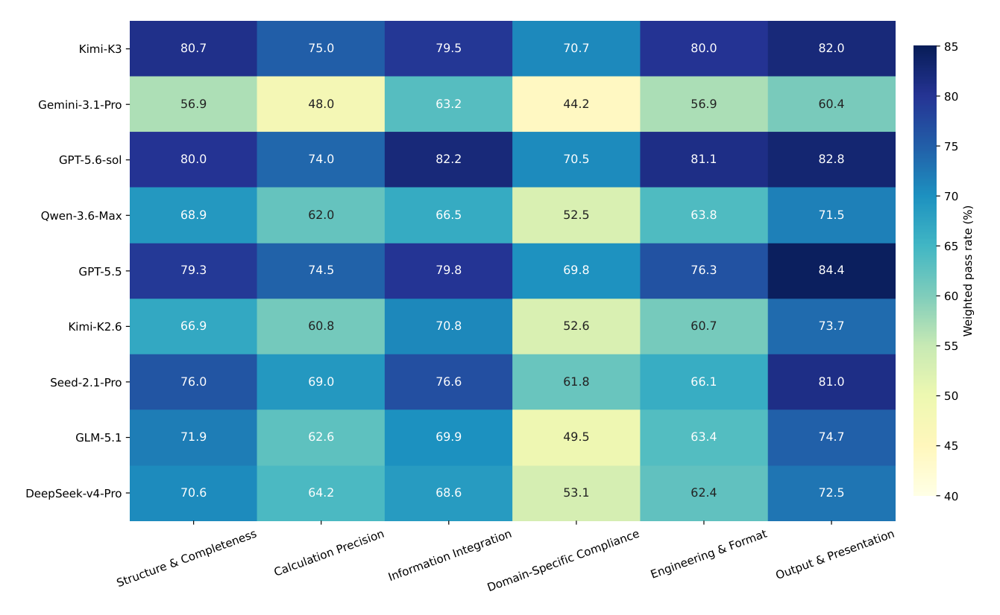
Figure 4 Performance across rubric dimensions. Importance-weighted pass rates (%) of different models on the six rubric dimensions in StartupBench. Higher values indicate better performance under the corresponding evaluation dimension.
successful task completion rather than its expected difficulty. This pattern reveals a characteristic failure mode of current agents: they can often fulfill auxiliary or surface-level requirements while failing on the core requirements that determine whether the task is actually completed successfully. In other words, substantial apparent progress can be driven by satisfying less consequential parts of the task, while critical omissions still prevent the final deliverable from being practically usable.
任务成功的贡献，而非其预期难度。这一模式揭示了当前智能体的一种典型失败方式：它们往往能完成辅助性或表层要求，却在决定任务是否真正成功的核心要求上失败。换言之，大量表面进展可能来自完成任务中较不关键的部分，而关键遗漏仍使最终交付物无法实际使用。
A typical case of models struggling with requirements central to task completion is shown in Figure 5. In this mechanical process task, models often complete peripheral workbook requirements but fail on the core technical operations: extracting dimensions accurately from engineering drawings, validating specifications against the provided documents, and linking identified discrepancies to the corresponding rectification actions. These failures prevent the resulting workbook from fulfilling its primary purpose even when many auxiliary requirements are successfully completed.
图 5 展示了模型在任务完成核心要求上受挫的典型案例。在这项机械工序任务中，模型往往能完成外围的工作簿要求，却在核心技术操作上失败：从工程图纸中准确提取尺寸、对照所给文档校验规格、以及将发现的偏差关联到相应的整改措施。即便许多辅助要求被成功完成，这些失败仍使产出的工作簿无法实现其首要目的。
Output format non-compliance. Some failures arise from models not producing deliverables in the file type explicitly required by the task. Unlike most failure modes discussed above, this requirement involves neither complex reasoning nor domain knowledge and can be verified deterministically from file extensions. Nevertheless, no model achieves perfect compliance on the 56 tasks with explicit output-format requirements (Table 5), with success rates ranging from 97.6% to 86.3%. Most violations fall into two recurring patterns:
输出格式不合规。一些失败源于模型没有以任务明确要求的文件类型产出交付物。与上文讨论的大多数失败模式不同，这一要求既不涉及复杂推理，也不涉及领域知识，可依据文件扩展名确定性核验。然而，在 56 项有明确输出格式要求的任务上（表 5），没有任何模型达到完全合规，成功率介于 97.6% 与 86.3% 之间。大多数违规可归入两类反复出现的模式：
generating an incorrect file type (e.g., returning .md/.txt instead of the required .pdf) and omitting part of the requested deliverables (e.g., producing only one of the required .xlsx and .docx files). These errors suggest that even elementary deliverable-level constraints remain a non-negligible source of failures for current foundation models.
生成错误的文件类型（例如返回 .md/.txt 而非要求的 .pdf），以及遗漏部分所要求的交付物（例如只产出要求的 .xlsx 与 .docx 之一）。这些错误说明，即便是初级的交付物级约束，对当前基础模型而言仍是不可忽视的失败来源。
10
10
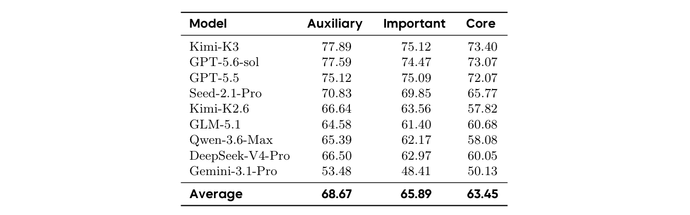
Table 4 Task-normalized rubric satisfaction rates (%) across different importance levels. For each model–task–trial, we first compute the satisfaction rate within each importance level and then average across tasks and trials.
Table 5 Output-format compliance on the 56 StartupBench tasks with explicit output-file requirement rubrics. Models are ranked by compliance rate.
4.4.2Behavior-level Failure Analysis
Complex Instruction Following. Complex real-world workflows typically impose numerous constraints on the final deliverable, including structural organization, computation logic, formatting, and executable correctness. Although these requirements are explicitly specified in the task description, current models frequently exhibit partial compliance: they satisfy the most visible requirements while overlooking other equally critical constraints. As a result, the generated artifact appears largely complete from a superficial inspection, yet fails to satisfy the complete acceptance criteria required for direct use. This behavior indicates that models often optimize for producing outputs that look correct, rather than ensuring that every instruction governing the final deliverable has been faithfully executed.
复杂指令遵循。复杂的真实工作流通常对最终交付物施加大量约束，包括结构组织、计算逻辑、格式与可执行正确性。尽管这些要求在任务描述中有明确说明，当前模型却经常表现出部分合规：满足最显眼的要求，而忽视其他同等关键的约束。结果，生成的产物经表面检查显得大体完整，却不满足直接使用所需的完整验收标准。这一行为表明，模型往往在优化“看起来正确”的输出，而非确保管辖最终交付物的每条指令都被忠实执行。
A representative example is shown in Figure 6. The task requires generating a complete HR payroll workbook from multiple source sheets under a diverse set of structural, computational, and formatting constraints. Although the model produces an artifact that appears largely complete—including all required worksheets, formulas, charts, and dashboard layouts—the artifact-level evaluation reveals that several critical acceptance conditions remain unsatisfied. Specifically, key cached values required for downstream verification are missing, rendering the workbook unverifiable despite its polished appearance. This case illustrates a common pattern of partial compliance, where the model satisfies the most visible requirements while overlooking less obvious but equally essential deliverable constraints.
图 6 给出一个代表性示例。该任务要求在多样的结构、计算与格式约束下，从多个源表生成完整的人力资源薪酬工作簿。模型产出的产物看似大体完整——包括全部所需工作表、公式、图表与仪表盘布局——但产物级评估显示若干关键验收条件未被满足。具体而言，下游验证所需的关键缓存值缺失，使工作簿虽外观精致却无法核验。该案例展示了部分合规的常见模式：模型满足最显眼的要求，却忽视不那么显眼但同样必要的交付物约束。
Self-Verification Hallucination. We also observe that many models fail not because they cannot complete the required workflow, but because they incorrectly assume that successful execution implies successful delivery. After producing a plausible artifact, the model often summarizes the intended reasoning process or completed steps as evidence that the task has been verified, without independently inspecting the final deliverable against the original user requirements. Consequently, subtle yet critical errors—such as incorrect cell values, unmatched identifiers, missing constraints, or formatting inconsistencies—remain undetected despite an otherwise convincing output. This behavior reflects a form of self-verification hallucination, where
自验证幻觉。我们还观察到，许多模型的失败并非因为无法完成所需工作流，而是因为它们错误地假设执行成功即等于交付成功。在产出一个看似合理的产物后，模型往往把设想的推理过程或已完成的步骤总结为任务已通过验证的证据，而不对照原始用户要求独立检查最终交付物。因此，细微却关键的错误——如错误的单元格值、不匹配的标识符、缺失的约束或格式不一致——尽管输出在其他方面令人信服，仍未被发现。这一行为反映了一种自验证幻觉：
11
11
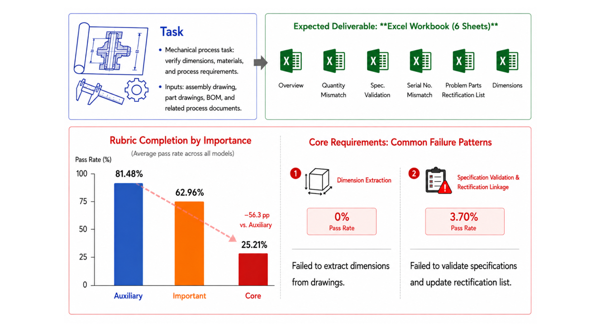
Figure 5 A representative case of models failing on core rubrics though passing auxiliary rubrics on StartupBench.
the model mistakes confidence in its own reasoning process for evidence that the generated artifact satisfies the acceptance criteria. In real-world office workflows, however, successful completion requires validating the final deliverable itself rather than merely confirming the execution process, making this a common source of deployment-critical failures. A typical case is shown at Appendix D.1.
模型把对自身推理过程的信心误当作产物满足验收标准的证据。然而在真实办公工作流中，成功完成要求验证最终交付物本身，而不只是确认执行过程，这使之成为部署关键失败的常见来源。典型案例见附录 D.1。
Domain-Specific Expertise. Another major source of failure arises from insufficient domain-specific expertise, consistent with the relatively poor performance on the Domain-Specific Compliance dimension. Unlike general instruction-following errors, these failures are driven by the unique operational requirements of different professional domains. Although models often generate outputs that appear fluent and professionally formatted, they frequently fail to satisfy the domain-specific constraints that determine whether a deliverable is actually usable. As a result, the dominant failure patterns vary substantially across domains, reflecting different notions of correctness, evidence, precision, and actionability required by real-world workflows.
领域专业知识。另一个主要失败来源是领域专业知识不足，这与模型在 Domain-Specific Compliance 维度上相对较差的表现一致。与一般性指令遵循错误不同，这类失败由不同专业领域独特的操作要求驱动。模型常生成看起来流畅、格式专业的输出，却经常无法满足决定交付物是否实际可用的领域特定约束。因此，主导失败模式在不同领域之间差异很大，反映出真实工作流对正确性、证据、精度与可行动性的不同要求。
From a domain perspective, different professional areas expose distinct failure characteristics. Business and management tasks primarily stress artifact correctness, particularly for spreadsheets, dashboards, formulas, and structured reports. Finance tasks emphasize source attribution, numerical precision, valuation assumptions, and temporal consistency, where errors commonly arise from insufficient reconciliation, inadequate numerical self-verification, or inconsistent accounting conventions. Legal tasks are less constrained by legal writing style than by the completeness and correctness of legal reasoning, including missing citations, incomplete factual coverage, insufficient statutory support, or incorrect mapping between facts and applicable rules. Medical tasks achieve relatively higher average scores but pose substantially greater safety risks, since mistakes in medication timing, continuation criteria, or discharge planning directly undermine clinical usability. STEM and Computer Science tasks instead require precise object-level grounding, demanding accurate relationships among code, engineering drawings, images, bills of materials, and system components. Finally, education and humanities tasks place greater emphasis on fine-grained rule following, such as curriculum requirements, credit allocation, document organization, and textual coherence. A typical example of failure caused by insufficient domain-specific expertise is shown at Appendix D.2.
从领域视角看，不同专业领域呈现不同的失败特征。Business 与管理任务主要考验产物正确性，尤其是电子表格、仪表盘、公式与结构化报告。Finance 任务强调来源归属、数值精度、估值假设与时间一致性，错误常源于对账不足、数值自校验不充分或会计口径不一致。Legal 任务受法律文书风格的约束相对较小，更受制于法律推理的完整性与正确性，包括引用缺失、事实覆盖不全、法条支持不足或事实与适用规则之间的映射错误。Medical 任务的平均分相对较高，但安全风险大得多：用药时机、续治标准或出院计划上的错误会直接损害临床可用性。STEM 与 Computer Science 任务则要求精确的对象级定位，需要在代码、工程图纸、图像、物料清单与系统组件之间建立准确关系。Education 与 Humanities 任务则更强调细粒度规则遵循，如课程要求、学分分配、文档组织与文本连贯性。由领域专业知识不足导致失败的典型案例见附录 D.2。
4.5Impact of Harness on Startup Tasks
12
12
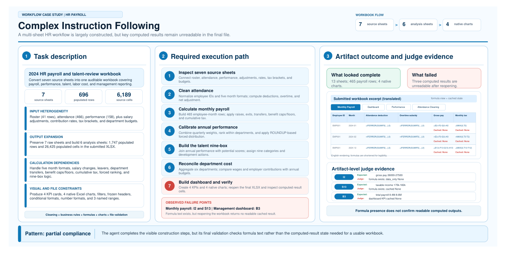
Figure 6 A representative case of complex instruction following failure. Although the generated workbook appears complete, artifact-level evaluation reveals that several critical acceptance conditions remain unsatisfied, illustrating a common pattern of partial compliance.
Table 6 Performance under different general-purpose agent frameworks. For each model, we report the average score under three general-purpose frameworks and the performance range (max–min) across frameworks.
4.5.1Effect of General-Purpose Harness
In the main experiment, all models are evaluated under nanobot Agent framework. To examine whether the observed performance is primarily determined by the choice of agent framework rather than the underlying model, we re-evaluate the benchmark using two more representative general-purpose agent frameworks: Hermes [14] and Claude Code [1]. All frameworks are evaluated under the same task set and identical evaluation protocol, with only the execution framework replaced.
主实验中，所有模型都在 nanobot 智能体框架下评估。为考察所观察到的表现究竟主要由智能体框架的选择还是由底层模型决定，我们改用另外两个代表性的通用智能体框架——Hermes [14] 与 Claude Code [1]——重新评估该基准。所有框架在同一任务集与完全相同的评估协议下评估，仅替换执行框架。
As shown in Table 6, replacing the general-purpose framework leads to only minor performance differences. Across all evaluated models, the average variation between the best and worst framework is only 1.79 points. GLM-5.1 is almost completely unaffected (0.61 points), while even the largest difference observed on GPT-5.5 is only 2.68 points. More importantly, the relative ordering of models remains unchanged across all three frameworks. These results suggest that StartupBench is largely robust to the choice of general-purpose agent framework. Although different frameworks adopt different prompting strategies, tool interfaces, and interaction mechanisms, simply replacing one general-purpose framework does not substantially alter end- to-end task performance. Consequently, the performance gap observed on StartupBench primarily reflects the capability of the underlying foundation models rather than implementation-specific characteristics of a particular framework.
如表 6 所示，替换通用框架仅带来很小的性能差异。在所有被评估模型上，最好与最差框架之间的平均差异仅 1.79 分。GLM-5.1 几乎完全不受影响（0.61 分），即使在 GPT-5.5 上观察到的最大差异也只有 2.68 分。更重要的是，三个框架下模型的相对排序保持不变。这些结果表明 StartupBench 对通用智能体框架的选择基本稳健。尽管不同框架采用不同的提示策略、工具接口与交互机制，简单替换通用框架并不会实质改变端到端任务表现。因此，StartupBench 上观察到的性能差距主要反映底层基础模型的能力，而非特定框架的实现特性。
13
13
Table 7 General-purpose versus specialized agent systems. Oracle General denotes the averages of the highest score achieved in all trials for every model.表 7 汇总了通用与专用智能体系统的比较。在全部执行中，通用智能体取得 64.26 的平均分与 19.74% 的成功率，大幅低于专用智能体的 83.50 与 39.18%。鉴于专用智能体为其目标领域做了显式设计与优化，我们进一步为通用智能体设置一个更强的 oracle 条件：对每个模型–任务对，保留三次独立尝试中的最佳结果。该 oracle 选择将平均分提升至 71.75、成功率提升至 28.06%，但仍远不及专用智能体——平均分相差 11.75 分、成功率相差 11.12 个百分点。可见，这一性能差距无法简单归因于随机波动或偶发执行失败：即便允许通用智能体多次尝试并按最佳观测结果评估，专用智能体系统在这些任务上仍显著更有效。结合前文的失败模式分析，这些发现更完整地刻画了通用基础模型与专用创业智能体之间尚存的差距：今天的基础模型虽尚不能在统一通用框架下完全取代领域专用智能体，但其短板集中于相对清晰的一组能力——复杂指令遵循、领域知识、职业操作惯例与长程工作流执行。这表明专用系统的优势未必需要根本不同的智能体架构，而可能只是当前通用模型尚未可靠获得的能力。随着这些底层能力持续改进，通用智能体或许能在不依赖领域专用 harness 设计的情况下，越来越多地完成有价值的职业端到端任务。
4.5.2General-Purpose Agents versus Specialized Agents
To further understand the role of agent frameworks, we compare general-purpose agent frameworks with the specialized startup agents from which StartupBench tasks are derived. Unlike the previous experiment, this comparison evaluates each task using its corresponding production startup agent, which has been specifically optimized for its target workflow through domain-specific model selection, prompting strategies, tool orchestration, and workflow design.
为进一步理解智能体框架的作用，我们将通用智能体框架与派生出 StartupBench 任务的专用创业智能体进行比较。与前一实验不同，这一比较使用每项任务对应的生产级创业智能体进行评估——它们通过领域特定的模型选择、提示策略、工具编排与工作流设计，针对目标工作流做了专门优化。
5Conclusion
We introduce StartupBench, a benchmark for evaluating models on end-to-end professional workflows derived
我们提出 StartupBench——一个用于评估模型在端到端职业工作流上表现的基准，这些工作流派生
from market-validated AI-native products and real-world user demands. Across multiple tasks spanning diverse domains, our evaluation reveals a substantial gap between making meaningful progress on professional work and producing deliverables that fully satisfy practical acceptance criteria. This gap is primarily driven by limitations in complex instruction following, domain-specific expertise, professional conventions, and long-horizon workflow execution. By grounding evaluation in workflows that users already seek to delegate to AI, StartupBench provides a realistic measure of practical agent capabilities and highlights concrete directions for future improvement. We hope StartupBench supports the development of models and agents that can not only perform valuable professional work, but reliably deliver results ready for direct use.
自经市场验证的 AI 原生产品与真实用户需求。在覆盖多个领域的众多任务上，我们的评估揭示了“在职业工作上取得可观进展”与“产出完全满足实际验收标准的交付物”之间的显著差距。这一差距主要由复杂指令遵循、领域专业知识、职业惯例与长程工作流执行方面的局限造成。通过把评估扎根于用户已希望委托给 AI 的工作流，StartupBench 提供了对实用智能体能力的真实度量，并指明了具体的改进方向。我们希望 StartupBench 能支持这样一些模型与智能体的发展：它们不仅能完成有价值的职业工作，还能可靠交付可直接使用的结果。
14
14
6Contributions
Project Leads Liya Zhu, Xin Ma, Tao Liu, Haodong Wang, Ge Zhang
项目负责人（Project Leads）：Liya Zhu, Xin Ma, Tao Liu, Haodong Wang, Ge Zhang
Core Contributors Jingzhe Ding, Qingshui Gu, Yongjie Zhong, Jinxiang Meng, Yuan Gao, Yunqiu Zhou, Hao Zhu, Jifeng He, Yongzhi Liao, Xinyi Zhang, Chaoxin Li, Yi Zhu, Xi Lin, Duju Zeng, Xiang Gao, Wen Zhang, Yunyang Wang, Duo Wang
核心贡献者（Core Contributors）：Jingzhe Ding, Qingshui Gu, Yongjie Zhong, Jinxiang Meng, Yuan Gao, Yunqiu Zhou, Hao Zhu, Jifeng He, Yongzhi Liao, Xinyi Zhang, Chaoxin Li, Yi Zhu, Xi Lin, Duju Zeng, Xiang Gao, Wen Zhang, Yunyang Wang, Duo Wang
Contributors Huan Zhou, Zuo Wang, Jin Chen, Kaiyuan Zhang, Chuqian Yu, Tianhao Yu, Longxiang Liu, Jianbo Xue, Huimin Che, Jiahao Wang
贡献者（Contributors）：Huan Zhou, Zuo Wang, Jin Chen, Kaiyuan Zhang, Chuqian Yu, Tianhao Yu, Longxiang Liu, Jianbo Xue, Huimin Che, Jiahao Wang
Sponsor Committee Yujia Qin, Jiaheng Liu
支持委员会（Sponsor Committee）：Yujia Qin, Jiaheng Liu
Corresponding Authors Ge Zhang (gezhang@umich.edu) Shen Yan (sheny@bytedance.com) Xiaolong Chang (changxiaolong@bytedance.com) Wenhao Huang (huang.wenhao@bytedance.com)
通讯作者（Corresponding Authors）：Ge Zhang (gezhang@umich.edu) Shen Yan (sheny@bytedance.com) Xiaolong Chang (changxiaolong@bytedance.com) Wenhao Huang (huang.wenhao@bytedance.com)
15
15
References参考文献
[2] ByteDance Seed. Seed2.1 model card: Agentic intelligence for productivity. Technical report, ByteDance, 2026. URL https://lf3-static.bytednsdoc.com/obj/eden-cn/lapzild-tss/ljhwZthlaukjlkulzlp/seed2.1/ Seed2_1_Model_Card.pdf.
[REF] 原样保留英文文献列表
[3] DeepSeek-AI. Deepseek-v4: Towards highly efficient million-token context intelligence, 2026. URL https: //huggingface.co/collections/deepseek-ai/deepseek-v4. Technical Report.
[REF] 原样保留英文文献列表
Megh Thakkar, Quentin Cappart, David Vazquez, et al. Workarena: How capable are web agents at solving common knowledge work tasks?, 2024. URL https://arxiv. org/abs/2403.07718.
[REF] 原样保留英文文献列表
[6] Google Cloud. Gemini 3.1 Pro Model Card, 4 2026. URL https://docs.cloud.google.com/vertex-ai/ generative-ai/docs/models/gemini/3-1-pro?hl=zh-cn.
[REF] 原样保留英文文献列表
[7] Xiaomeng Hu, Yinger Zhang, Fei Huang, Jianhong Tu, Yang Su, Lianghao Deng, Yuxuan Liu, Yantao Liu,
[REF] 原样保留英文文献列表
[8] Seungone Kim, Jay Shin, Joel Jang, Shayne Longpre, Hwaran Lee, Sangdoo Yun, Ryan Shin, Sungdong Kim,
[REF] 原样保留英文文献列表
[9] Fangyu Lei, Jinxiang Meng, Yiming Huang, Junjie Zhao, Yitong Zhang, Jianwen Luo, Xin Zou, Ruiyi Yang,
[REF] 原样保留英文文献列表
[10] Xiao Liu, Hao Yu, Hanchen Zhang, Yifan Xu, Xuanyu Lei, Hanyu Lai, Yu Gu, Hangliang Ding, Kaiwen
[REF] 原样保留英文文献列表
Men, Kejuan Yang, et al. Agentbench: Evaluating llms as agents. In International Conference on Learning Representations, 2024.
[REF] 原样保留英文文献列表
[11] Jinxiang Meng, Shaoping Huang, Fangyu Lei, Jingyu Guo, Haoxiang Liu, Jiahao Su, Sihan Wang, Yao Wang,
[REF] 原样保留英文文献列表
Enrui Wang, Ye Yang, et al. Dv-world: Benchmarking data visualization agents in real-world scenarios. arXiv preprint arXiv:2604.25914, 2026.
[REF] 原样保留英文文献列表
[13] Moonshot AI. Kimi K2.6: Advancing open-source coding. https://www.kimi.com/blog/kimi-k2-6, 2026. Accessed: 2026-06-02.
[REF] 原样保留英文文献列表
[14] Nous Research. Hermes agent: The ai agent that learns from you. https://github.com/hermes-agent-org/
[REF] 原样保留英文文献列表
[15] OpenAI. Gpt-5.6 system card. Technical report, OpenAI, 7 2026. URL https://deploymentsafety.openai.
[REF] 原样保留英文文献列表
[17] Krista Opsahl-Ong, Arnav Singhvi, Jasmine Collins, Ivan Zhou, Cindy Wang, Ashutosh Baheti, Owen Oertell,
[REF] 原样保留英文文献列表
Jacob Portes, Sam Havens, Erich Elsen, et al. Officeqa pro: An enterprise benchmark for end-to-end grounded reasoning. arXiv preprint arXiv:2603.08655, 2026.
[REF] 原样保留英文文献列表
[18] Tejal Patwardhan, Rachel Dias, Elizabeth Proehl, Grace Kim, Michele Wang, Olivia Watkins, Simón Posada
[REF] 原样保留英文文献列表
16
16
[22] Wentao Shi, Yu Wang, Yuyang Zhao, Yuxin Chen, Fuli Feng, Xueyuan Hao, Xi Su, Qi Gu, Hui Su, Xun-
[REF] 原样保留英文文献列表
liang Cai, et al. Aj-bench: Benchmarking agent-as-a-judge for environment-aware evaluation. arXiv preprint arXiv:2604.18240, 2026.
[REF] 原样保留英文文献列表
[24] Zirui Tang, Xuanhe Zhou, Yumou Liu, Linchun Li, Yukai Wu, Weizheng Wang, Hongzhang Huang, Wei Zhou,
[REF] 原样保留英文文献列表
Cheng, Dongchan Shin, Fangyu Lei, Yitao Liu, Yiheng Xu, Shuyan Zhou, Silvio Savarese, Caiming Xiong, Victor Zhong, and Tao Yu. OSWorld: Benchmarking multimodal agents for open-ended tasks in real computer envi- ronments. In The Thirty-eight Conference on Neural Information Processing Systems Datasets and Benchmarks Track, 2024.
[REF] 原样保留英文文献列表
[29] Qianyu Yang, Yang Liu, Jiaqi Li, Jun Bai, Hao Chen, Kaiyuan Chen, Tiliang Duan, Jiayun Dong, Xiaobo
[REF] 原样保留英文文献列表
Hu, Zixia Jia, et al. Onemillion-bench: How far are language agents from human experts? arXiv preprint arXiv:2603.07980, 2026.
[REF] 原样保留英文文献列表
gizing reasoning and acting in language models. In 11th International Conference on Learning Representations, ICLR 2023, 2023.
[REF] 原样保留英文文献列表
[31] Runyang You, Hongru Cai, Caiqi Zhang, Qiancheng Xu, Meng Liu, Tiezheng Yu, Yongqi Li, and Wenjie Li.
[REF] 原样保留英文文献列表
Li, Dacheng Li, Eric Xing, et al. Judging llm-as-a-judge with mt-bench and chatbot arena. Advances in neural information processing systems, 36:46595–46623, 2023.
[REF] 原样保留英文文献列表
[34] Shuyan Zhou, Frank F Xu, Hao Zhu, Xuhui Zhou, Robert Lo, Abishek Sridhar, Xianyi Cheng, Tianyue Ou,
[REF] 原样保留英文文献列表
Yonatan Bisk, Daniel Fried, et al. Webarena: A realistic web environment for building autonomous agents. In International Conference on Learning Representations, 2024.
[REF] 原样保留英文文献列表
[35] Liya Zhu, Jingzhe Ding, Jian Zhang, Jianbo Xue, Shihao Liang, Ge Zhang, Yi Zhu, Duju Zeng, Xiang Gao,
[REF] 原样保留英文文献列表
Qingshui Gu, Mailun Gao, Huimin Che, Yan Zhao, Peiheng Zhou, Haojun Wang, Chaobo Xian, Lili Le, Chi Wu, Yiwei Liu, Shengda Long, Jiale Yang, Fangzhi Xu, Sijin Wu, Haodong Duan, Chao He, Zhaojian Li, Minchao Wang, Huan Zhou, Jiani Hou, Chuqian Yu, Weiran Shi, Hongwan Gao, Jiamin Chen, Guanhong Chen, Tingqin Luo, Kaiyuan Zhang, Zhixin Yao, Qing Hua, Yuhao Jiang, Jin Chen, Pu Chen, Zhenyu Hu, Xingyu Li, Zhengxuan Jiang, Meng Cao, Tianfeng Long, Haozhe Wang, Mingzhang Wang, Yichen Zhang, Yiming Dai, Chenchen Zhang, Jiaying Wang, Xinying Liu, Xingzu Liu, Lingling Zhang, Xinjie Chen, Yujia Qin, Wangchunshu Zhou, Zhiyong Wu, Yang Liu, Jiaheng Liu, Lei Zhang, Shen Yan, Wenhao Huang, Zaiyuan Wang, and Xiaolong Chang. Workflow-gym:
[REF] 原样保留英文文献列表
17
17
Towards long-horizon evaluation of computer-use agentic tasks in real-world professional fields, 2026. URL https://arxiv.org/abs/2606.11042.
[REF] 原样保留英文文献列表
Liu, Ernie Chang, Raghuraman Krishnamoorthi, Yuandong Tian, Yangyang Shi, Vikas Chandra, and Jürgen Schmidhuber. Agent-as-a-judge: Evaluate agents with agents. In Forty-second International Conference on Machine Learning, 2025.
[REF] 原样保留英文文献列表
18
18
Appendix附录
A Tutorial of StartupBench Task AnnotationA StartupBench 任务标注教程
A.1 Task Construction
A.1 任务构建
A startup task can be defined as a triple T = (q, E, R). The experts are required to provide all the elements of a task:
一项创业任务可定义为三元组 T = (q, E, R)。专家需要提供任务的全部要素：
• Input query: The query q is a natural-language statement of the task, specifying the user instruction that initiates the task. Derived from authentic scenarios of the work of annotators, the input query is supposed to reflect realistic user intent, including task background, implicit constraints and expected deliverables.
• 输入查询：查询 q 是任务的自然语言表述，指明发起任务的用户指令。输入查询源自标注者的真实工作场景，应反映真实用户意图，包括任务背景、隐含约束与预期交付物。
• Task workspace: The environment E denotes the complete workspace provided to the agent, including the multimodal source files together with any additional resources and interaction setting required to complete the task. The task workspace provides a self-contained execution environment for the agent. Each workspace includes all necessary input artifacts (e.g., files, datasets, or structured resources) required to complete the task, and ensures that the agent has access to sufficient input information to solve the problem. This design enables reproducible evaluation under controlled conditions while preserving realistic workflow structure.
• 任务工作区：环境 E 表示提供给智能体的完整工作区，包括多模态源文件以及完成任务所需的额外资源与交互设置。任务工作区为智能体提供自足的执行环境：每个工作区包含完成任务所需的全部必要输入产物（如文件、数据集或结构化资源），并确保智能体拥有解决问题所需的充分输入信息。这一设计在保留真实工作流结构的同时，支持受控条件下的可复现评估。
• Evaluation rubrics: The rubric R = {(pi, wi)}n i=1 is a checklist within which every item consists of a natural-language scoring point pi and a positive importance weight wi reflecting its importance to successful task completion. The evaluation rubrics define a set of fine-grained criteria used to assess task completion quality. Due to the complexity and multi-faceted nature of real-world workflows, each task is evaluated using multiple rubric items covering different dimensions. We categorize all rubrics in StartupBench into 6 dimensions and 3 importance levels, which are detailed in Appendix C.
• 评估 rubric：rubric R = {(pi, wi)}n i=1 是一份检查清单，其中每一项由自然语言评分点 pi 与反映其对任务成功完成重要性的正权重 wi 组成。评估 rubric 定义了一组用于评估任务完成质量的细粒度标准。由于真实工作流的复杂性与多面性，每项任务都用覆盖不同维度的多条 rubric 评估。我们将 StartupBench 中的全部 rubric 归入 6 个维度与 3 个重要性层级，详见附录 C。
Together, these components preserve the structure of real-world agent workflows while enabling systematic and objective evaluation. Tasks may require information synthesis, constraint following, structured generation, or domain-specific reasoning and judgment.
这些组件合在一起，既保留了真实智能体工作流的结构，又支持系统化、客观化的评估。任务可能要求信息综合、约束遵循、结构化生成，或领域特定的推理与判断。
A.2 Cross Validation
A.2 交叉校验
To ensure reliability of the quality of data, in our construction process each task is independently reviewed by at least one additional domain expert with relevant professional experience. Rather than focusing only on annotation consistency, reviewers validate the realism and correctness of the task from multiple complementary perspectives.
为确保数据质量可靠，构建过程中每项任务都由至少一名具有相关专业经验的额外领域专家独立评审。评审者不只关注标注一致性，还从多个互补视角验证任务的真实性与正确性。
• Task authenticity. Reviewers verify the authenticity of both the task description and the accompanying workspace. This includes checking that the input query reflects realistic user requests, that all provided materials are factually correct, and that no domain-specific knowledge errors exist.
• 任务真实性。评审者核实任务描述与随附工作区的真实性，包括检查输入查询是否反映真实用户请求、所提供材料是否事实正确、是否存在领域知识错误。
• Workflow fidelity. Reviewers examine whether the task faithfully represents real-world workflows in the corresponding profession. Tasks that deviate from practical working procedures or fail to reflect genuine job responsibilities are revised or discarded.
• 工作流保真度。评审者审查任务是否忠实反映相应职业的真实工作流。偏离实际工作流程或未能反映真实岗位职责的任务会被修订或弃用。
• Rubric validity. Reviewers inspect the evaluation rubrics to ensure that the assessed capabilities are meaningful for the target workflow, that rubric items are clear and unambiguous, and that their relative weights reasonably reflect task priorities.
• rubric 有效性。评审者检查评估 rubric，确保所考察的能力对目标工作流有意义、rubric 条目清晰无歧义、相对权重合理反映任务优先级。
• Ground-truth verification. Reviewers validate the reference solution (ground truth) by evaluating it against the finalized rubrics. The ground-truth deliverable is required to achieve a full score. If inconsistencies are identified between the reference solution and the evaluation criteria, both the solution and the rubrics are revised until they are mutually consistent.
• 真值核验。评审者对照最终确定的 rubric 评估参考解（真值）。真值交付物必须达到满分。若参考解与评估标准之间存在不一致，则同时修订解与 rubric，直至二者相互一致。
19
19
Table 8 Summary of domain expert backgrounds. Professional experience refers to reported years of experience in the corresponding or closely related domain.表 8 汇总了专家池的职业经验：中位数为 5 年。57 名专家中，68.4% 拥有至少 3 年职业经验，42.1% 至少 6 年，24.6% 至少 10 年。这些背景为把访谈得到的用户场景转化为可复现的基准任务，以及在交叉校验中评估任务的真实性、正确性与评估标准，提供了实践性领域知识。所有专家均依据任务构建与评审的实际工作量获得合理报酬。
B Domain Expert BackgroundB 领域专家背景
We recruit 57 domain experts to support task construction and cross-validation. The expert pool covers all 6
我们招募了 57 名领域专家支持任务构建与交叉校验。专家池覆盖 StartupBench 的全部 6 个
domains in StartupBench and spans a diverse range of professional backgrounds, including clinical medicine, law, investment and quantitative finance, software development and artificial intelligence, engineering, business management and consulting, and education and humanities. Experts are assigned to tasks according to their reported areas of expertise and professional experience, ensuring that task construction and review were conducted by individuals familiar with the corresponding professional domains.
领域，专业背景多样，包括临床医学、法律、投资与量化金融、软件开发与人工智能、工程、商业管理与咨询、教育与人文学科。专家按其报告的专业领域与职业经验分配任务，确保任务构建与评审由熟悉相应专业领域的人员完成。
C Rubrics of StartupBenchC StartupBench 的 rubric 体系
Rubric Dimensions. To facilitate consistent evaluation across heterogeneous real-world tasks, we organize all evaluation rubrics into six high-level categories according to the primary capability they assess. Rather than being tied to specific application domains, these categories capture common dimensions of deliverable quality that recur across office tasks, including correctness, completeness, data processing, professional reasoning, engineering quality, and presentation. This taxonomy enables more interpretable analysis of model strengths and weaknesses while maintaining a unified evaluation framework across different task types.
rubric 维度。为了在异构的真实任务间实现一致评估，我们按所考察的主要能力将全部评估 rubric 组织为六个高层类别。这些类别不与特定应用领域绑定，而是捕捉办公任务中反复出现的交付物质量共性维度，包括正确性、完整性、数据处理、专业推理、工程质量与呈现。这一分类体系使模型优劣分析更可解释，同时在任务类型间保持统一的评估框架。
• Structure & Completeness. Evaluates whether the required deliverables are fully produced with the correct organization, file structure, required components, and overall completeness.
• Structure & Completeness。评估是否完整产出所需交付物，且组织正确、文件结构合理、必备组件齐全、整体完整。
• Calculation Precision. Evaluates the correctness of numerical results, logical reasoning, formula execution, factual consistency, and other objective computations.
• Calculation Precision。评估数值结果、逻辑推理、公式执行、事实一致性及其他客观计算的正确性。
• Information Integration. Evaluates data cleaning, transformation, aggregation, statistical analysis, feature engineering, modeling, and other structured data manipulation workflows.
• Information Integration。评估数据清洗、转换、聚合、统计分析、特征工程、建模等结构化数据操作工作流。
• Domain-Specific Compliance. Evaluates whether outputs satisfy domain-specific professional require- ments, including business logic, financial principles, legal reasoning, medical practice, educational standards, and other expert knowledge.
• Domain-Specific Compliance。评估输出是否满足领域特定职业要求，包括商业逻辑、金融原理、法律推理、医疗实践、教育标准及其他专家知识。
• Engineering & Format. Evaluates implementation quality, coding conventions, spreadsheet engineering, document formatting, reproducibility, robustness, naming conventions, and compliance with technical specifications.
• Engineering & Format。评估实现质量、编码规范、电子表格工程、文档格式、可复现性、稳健性、命名约定及技术规格符合度。
• Output & Presentation. Evaluates the quality of visual presentation and communication, including charts, layouts, formatting, readability, report organization, and overall usability of the final deliverables.
• Output & Presentation。评估视觉呈现与沟通质量，包括图表、版式、格式、可读性、报告组织与最终交付物的整体易用性。
20
20
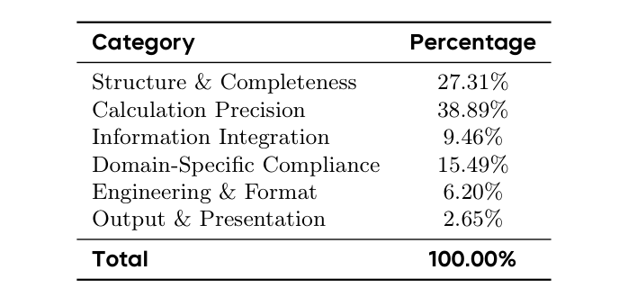
Table 9 Distribution of rubric categories in StartupBench.表 9 汇总了 StartupBench 全部 2,453 条 rubric 的分布。Calculation Precision 是最大的 rubric 类别（38.9%），反映出产出客观正确工作成果的重要性。Structure & Completeness 与 Domain-Specific Compliance 合计占另外 42.8%，突出表明成功完成真实办公工作流不仅需要计算正确，还需要交付物完整与专业领域推理。
Rubric Importance Levels. To account for differences in the importance of individual requirements to successful task completion, we assign each rubric to one of three importance levels. Core rubrics capture requirements that directly determine whether the primary user needs are satisfied; violating them would substantially compromise the correctness, reliability, safety, or usability of the final deliverable. Important rubrics represent key requirements for high-quality task completion whose satisfaction materially affects the overall quality of the deliverable, but whose individual violation does not necessarily render it unusable. Auxiliary rubrics capture lower-level requirements whose omission primarily affects details, user experience, visual appeal, or polish rather than the fundamental usability of the deliverable. We assign weights of 5, 3, and 1 to Core, Important, and Auxiliary rubrics, respectively, and use these weights when aggregating rubric-level judgments into the task score. A typical case of task containing rubrics of different levels is shown at Figure 7.
rubric 重要性层级。为反映各项要求对任务成功完成的重要性差异，我们将每条 rubric 归入三个重要性层级之一。Core rubric 捕捉直接决定用户主要需求是否得到满足的要求，违反它们会严重损害最终交付物的正确性、可靠性、安全性或可用性。Important rubric 代表高质量完成任务的关键要求，是否满足会实质影响交付物整体质量，但单独违反不必然使其不可用。Auxiliary rubric 捕捉较低层级的要求，遗漏它们主要影响细节、用户体验、视觉吸引力或精致程度，而非交付物的根本可用性。我们为 Core、Important 与 Auxiliary rubric 分别赋权重 5、3、1，并在把 rubric 级判定聚合为任务分数时使用这些权重。一个包含不同层级 rubric 的典型任务案例见图 7。
Across all tasks, Core, Important, and Auxiliary rubrics account for an average of 59.10%, 34.33%, and 6.57% of the total task weight, respectively, ensuring that task scores are primarily determined by requirements that materially affect successful task completion.
在全部任务上，Core、Important 与 Auxiliary rubric 平均分别占任务总权重的 59.10%、34.33% 与 6.57%，确保任务分数主要由对任务成功完成有实质影响的要求决定。
D Examples of Behavior-level Failure ModesD 行为级失败模式示例
D.1 Self-Verification Hallucination
D.1 自验证幻觉
A representative example is shown in Fig. 8. The task requires the model to filter all level-11 members, simulate route check-ins until each member reaches the level-12 threshold, and generate an Excel workbook satisfying a set of precise value and formatting constraints. The produced workbook appears largely complete, containing the required worksheet, member records, and output columns, leading the model to conclude that the task has been successfully finished. However, artifact-level inspection reveals multiple acceptance-critical errors, including incorrect effective-point values and mismatched member names. The underlying issue is not that the model fails to perform the required computation, but that it never verifies the generated artifact itself. Instead, it treats a successful execution summary as evidence that the final deliverable has been validated. Consequently, localized yet user-critical errors remain unnoticed, illustrating a form of self-verification hallucination, where confidence is derived from the reasoning process rather than from independently checking the completed artifact against the original task requirements.
一个代表性示例见图 8。该任务要求模型筛选出全部 11 级成员，模拟路线打卡直至每个成员达到 12 级门槛，并生成满足一组精确数值与格式约束的 Excel 工作簿。产出的工作簿看似大体完整——包含所需工作表、成员记录与输出列——令模型断定任务已成功完成。然而，产物级检查发现多处验收关键错误，包括有效积分（effective-point）数值错误与成员姓名不匹配。深层问题不在于模型无法完成所需计算，而在于它从未验证生成的产物本身，而是把成功的执行摘要当作最终交付物已通过验证的证据。于是，局部却对用户至关重要的错误未被察觉——这正是一种自验证幻觉：信心来自推理过程，而非对照原始任务要求独立检查已完成的产物。
D.2 Domain-Specific Failure
D.2 领域特定失败
A representative example of failure caused by insufficient domain-specific clinical actionability is shown at Figure 9. The model generates a well-formatted multidisciplinary treatment plan that appears clinically professional, yet violates multiple safety-critical treatment constraints. The failure stems not from poor writing quality, but from an inability to convert medical knowledge into actionable and clinically reliable decisions.
一个由领域临床可行动性不足导致失败的代表性示例见图 9。模型生成了一份格式良好的多学科治疗方案，看起来颇具临床专业水准，却违反了多条安全攸关的治疗约束。失败并非源于写作质量不佳，而是源于无法将医学知识转化为可行动、临床可靠的决策。
21
21
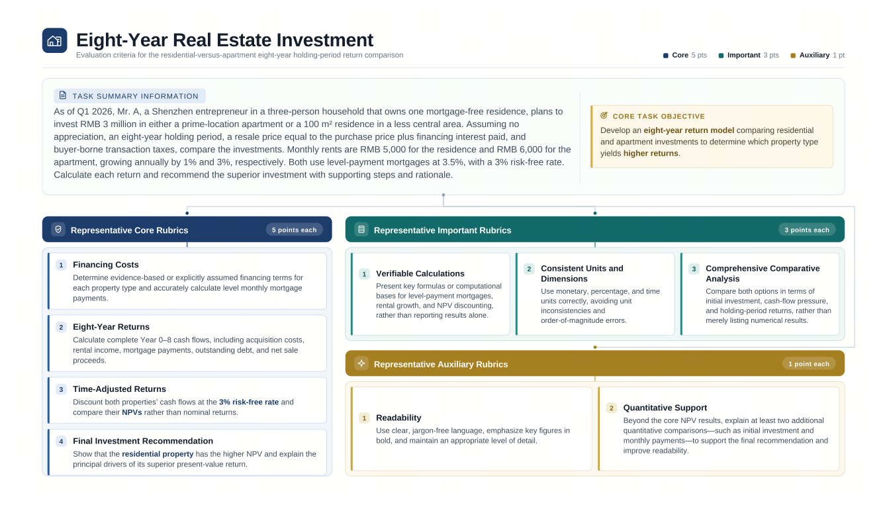
Figure 7 A representative example of a rubric of a task spanning 3 levels. Core rubrics assess the essential financial reasoning and calculations required to solve the investment problem, Important rubrics evaluate the correctness and completeness of the supporting analysis, while Auxiliary rubrics capture presentation quality and additional quantitative support.
22
22
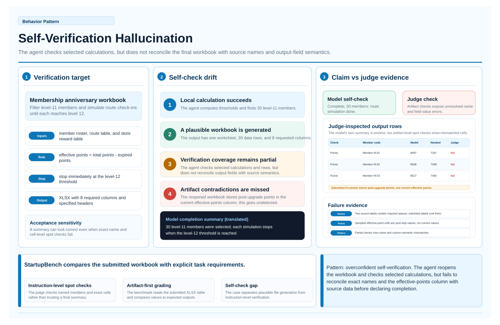
Figure 8 A representative example of self-verification hallucination. The model generates a plausible workbook and concludes that the task has been completed based on its execution process. However, artifact-level spot checks expose acceptance-critical errors in the final deliverable, showing that the model mistakes a progress summary for actual verification instead of validating the generated artifact against the original task requirements.
23
23
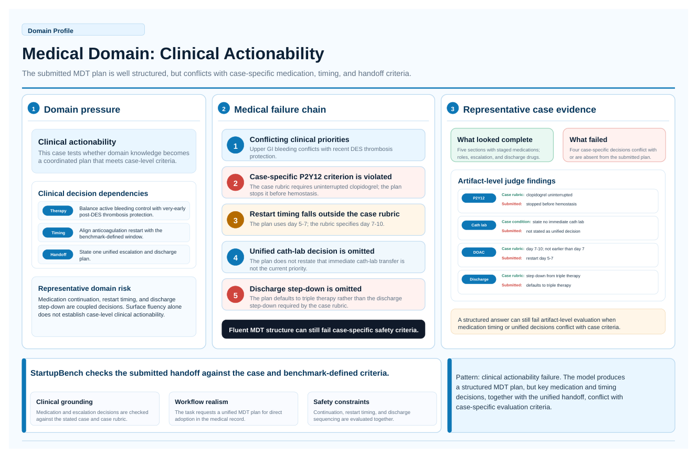
Figure 9 A representative example of failure caused by insufficient domain-specific clinical actionability.
24
24